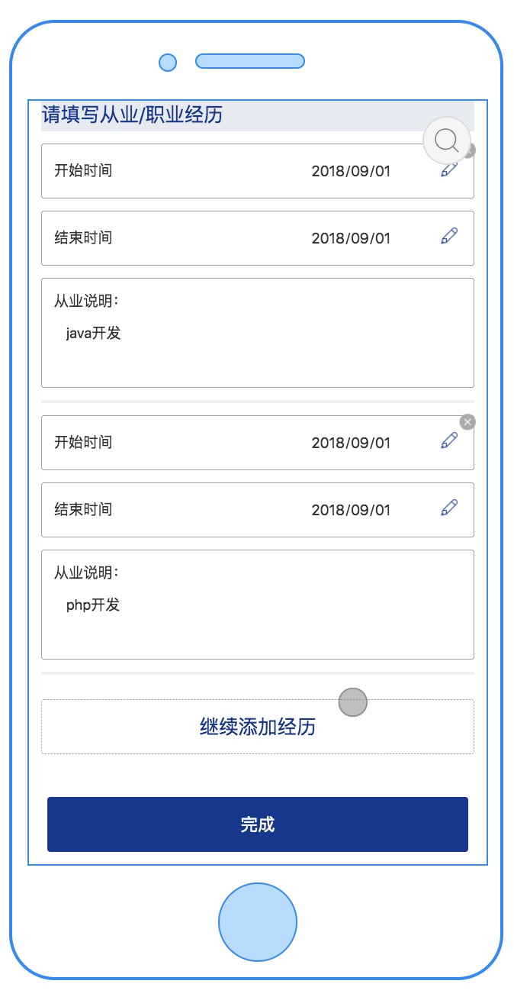

<!DOCTYPE html>
<html>
<head><meta name="generator" content="Hexo 3.8.0">
    <meta charset="UTF-8">
    <meta name="viewport" content="width=device-width, initial-scale=1, maximum-scale=1">
    <meta name="author" content="jishuiyuren">
    
    
    
    
    
    
    <title>制作一个添加工作经验的功能 | 吉水于人随笔</title>
    <!-- inject:style -->
    <link href="/css/style.css" rel="stylesheet" type="text/css">
    <!-- endinject -->
    <style>
        .cube-loading {
            top: 0;
            position: fixed;
            width: 100%;
            height: 100%;
            background: url('/images/lg/loading.gif') no-repeat center center;
            background-color: rgba(0,0,0,.7);
        }

        .cube-loading.out {
            display: none;
        }

        .cube-loading:before {
            display: block;
            content: 'Loading';
            position: relative;
            width: 100%;
            top: 50%;
            right: -50%;
            color: #fff;
        }

        @media(max-width: 768px) {
            .cube-loading:before {
                font-size: 1.2em;
                transform: translate(-24px,20px);
                -webkit-transform: translate(-24px,20px);
                -o-transform: translate(-24px,20px);
                -ms-transform: translate(-24px,20px);
            }
        }

        @media(min-width: 768px) {
            .cube-loading:before {

            }
        }
    </style>
    
</head></html>
<body>
<div class="cube-body">
    <nav id="cube-top-memu" class="cube-menu">
    <ul class="cube-menu-collapse">
        
        <li>
            <i class="cube-icon cube-icon-home" aria-hidden="true"></i>
            <a href="/">首页</a>
        </li>
        
        <li>
            <i class="cube-icon cube-icon-archive" aria-hidden="true"></i>
            <a href="/archives">归档</a>
        </li>
        
        <li>
            <i class="cube-icon cube-icon-categories" aria-hidden="true"></i>
            <a href="/categories">分类</a>
        </li>
        
        <li>
            <i class="cube-icon cube-icon-about" aria-hidden="true"></i>
            <a href="/about-me">关于我</a>
        </li>
        
    </ul>
</nav>
<nav class="cube-side-menu" id="cube-side-menu">
    <ul class="cube-menu-list">
        
        <li>
            <a class="lrc-control">Open Lyrics</a>
        </li>
        
        <li>
            <a class="scroll-to-top">Top</a>
        </li>
    </ul>
</nav>
    <header class="cube-header" id="cube-header">
    
    
    <div class="cube-type">
        <span class="cube-typed-title">吉水于人</span>
        <span class="cube-typed-cursor">|</span>
    </div>
    
</header>

    <style>
        nav.cube-menu:before {
            content: '';
            visibility: hidden;
            position: absolute;
            left: 0;
            top: 0;
            width: 100%;
            height: 44px;
        
            filter: blur(5px);
            -webkit-filter: blur(5px);
        
            z-index: -1;
            background-image: url('/images/bg.jpg');
            background-repeat: no-repeat;
            background-position: center 44px;
            background-size: cover;
            background-color: transparent;
        }

        header.cube-background.cube-header-background {
            visibility: hidden;
            background-image: url('/images/bg.jpg');
            background-position: center 0;
        }
    </style>
    <header class="cube-background cube-header-background">
        
        <div class="cube-type">
            <span class="cube-typed-title">吉水于人</span>
            <span class="cube-typed-cursor">|</span>
        </div>
        
    </header>
    <div class="load-header-background"></div>
    <script>
        (function (window) {

            window.headerModule = {}
            window.headerModule.image = {
                width: '2000',
                height: '1414'
            }

        })(window)
    </script>
    
    <div class="cube-content">
        <div class="cube-left">
            <div class="cube-article">
    <h1 class="title">制作一个添加工作经验的功能</h1>
    
    <div class="cube-article-header">
        <div class="cube-article-date">
            <i class="cube-icon cube-icon-date" aria-hidden="true"></i>
            <!-- moment.js对象 -->
            2019-03-17
        </div>
        <div class="cube-article-tags">
    <i class="cube-icon cube-icon-tag" aria-hidden="true"></i>
    
</div>
    </div>
    
    <div class="cube-article-content cube-markdown">
        
        <h3 id="前言"><a href="#前言" class="headerlink" title="前言"></a>前言</h3><p>前几天给一个app做项目经验添加功能时，自己犯了几个错误，于是决定总结一下，算是写成一个demo，给大家参考一下吧。<br><a id="more"></a></p>
<h3 id="具体实现"><a href="#具体实现" class="headerlink" title="具体实现"></a>具体实现</h3><p></p>
<p>添加工作经验的页面如图1，这是一个用户的详情页面，每条工作经验的右上角，添加了删除按钮，区域的下方有继续添加经历的按钮。说白了，这个功能就是实现对表单数据的增、删、改功能。首先，我从后端接口中获取到用户的工作经验数据（也可能是一个空数组），这块的逻辑我们很容易写出来，就是根据获取到的值进行遍历即可。</p>
<pre class=" language-bash"><code class="language-bash">    <span class="token operator">&lt;</span>div v-for<span class="token operator">=</span><span class="token string">"(item, index) in experiences"</span> :key<span class="token operator">=</span><span class="token string">"item.id"</span><span class="token operator">></span>
        <span class="token operator">&lt;</span>div class<span class="token operator">=</span><span class="token string">"detail"</span><span class="token operator">></span>
            <span class="token operator">&lt;</span>image class<span class="token operator">=</span><span class="token string">"closeIcon"</span> :src<span class="token operator">=</span><span class="token string">"iconPath('icon_gb_small')"</span>
                   @click<span class="token operator">=</span><span class="token string">"removeExperience(item.id)"</span><span class="token operator">></span><span class="token operator">&lt;</span>/image<span class="token operator">></span>
            <span class="token operator">&lt;</span>text class<span class="token operator">=</span><span class="token string">"unselect-txt"</span><span class="token operator">></span>开始时间<span class="token operator">&lt;</span>/text<span class="token operator">></span>
            <span class="token operator">&lt;</span>input class<span class="token operator">=</span><span class="token string">"input"</span> type<span class="token operator">=</span><span class="token string">"date"</span>
                   v-model<span class="token operator">=</span><span class="token string">"item.startDate"</span><span class="token operator">></span><span class="token operator">&lt;</span>/input<span class="token operator">></span>
            <span class="token operator">&lt;</span>image class<span class="token operator">=</span><span class="token string">"icon"</span> :src<span class="token operator">=</span><span class="token string">"iconPath('icon_pen')"</span><span class="token operator">></span><span class="token operator">&lt;</span>/image<span class="token operator">></span>
        <span class="token operator">&lt;</span>/div<span class="token operator">></span>
        <span class="token operator">&lt;</span>div class<span class="token operator">=</span><span class="token string">"detail"</span><span class="token operator">></span>
            <span class="token operator">&lt;</span>text class<span class="token operator">=</span><span class="token string">"unselect-txt"</span><span class="token operator">></span>结束时间<span class="token operator">&lt;</span>/text<span class="token operator">></span>
            <span class="token operator">&lt;</span>input class<span class="token operator">=</span><span class="token string">"input"</span> type<span class="token operator">=</span><span class="token string">"date"</span>
                   v-model<span class="token operator">=</span><span class="token string">"item.endDate"</span><span class="token operator">></span><span class="token operator">&lt;</span>/input<span class="token operator">></span>
            <span class="token operator">&lt;</span>image class<span class="token operator">=</span><span class="token string">"icon"</span> :src<span class="token operator">=</span><span class="token string">"iconPath('icon_pen')"</span><span class="token operator">></span><span class="token operator">&lt;</span>/image<span class="token operator">></span>
        <span class="token operator">&lt;</span>/div<span class="token operator">></span>
        <span class="token operator">&lt;</span>div class<span class="token operator">=</span><span class="token string">"detail2"</span><span class="token operator">></span>
            <span class="token operator">&lt;</span>text class<span class="token operator">=</span><span class="token string">"unselect-txt"</span><span class="token operator">></span>从业说明：<span class="token operator">&lt;</span>/text<span class="token operator">></span>
            <span class="token operator">&lt;</span>textarea  v-model<span class="token operator">=</span><span class="token string">"item.introduction"</span> class<span class="token operator">=</span><span class="token string">"textarea"</span><span class="token operator">></span><span class="token operator">&lt;</span>/textarea<span class="token operator">></span>
        <span class="token operator">&lt;</span>/div<span class="token operator">></span>
        <span class="token operator">&lt;</span>div class<span class="token operator">=</span><span class="token string">"list-gap"</span><span class="token operator">></span><span class="token operator">&lt;</span>/div<span class="token operator">></span>
    <span class="token operator">&lt;</span>/div<span class="token operator">></span>

    <span class="token operator">&lt;</span>div<span class="token operator">></span>
        <span class="token operator">&lt;</span>div class<span class="token operator">=</span><span class="token string">"next-btn"</span> @click<span class="token operator">=</span><span class="token string">"addNextExperience"</span><span class="token operator">></span>
            <span class="token operator">&lt;</span>text class<span class="token operator">=</span><span class="token string">"next-button"</span><span class="token operator">></span>继续添加经历<span class="token operator">&lt;</span>/text<span class="token operator">></span>
        <span class="token operator">&lt;</span>/div<span class="token operator">></span>
    <span class="token operator">&lt;</span>/div<span class="token operator">></span> 
    <span class="token operator">&lt;</span>div class<span class="token operator">=</span><span class="token string">"btn"</span> @click<span class="token operator">=</span><span class="token string">"addUserMaterial"</span><span class="token operator">></span>
            <span class="token operator">&lt;</span>text style<span class="token operator">=</span><span class="token string">"font-size: 28px;color: #ffffff;"</span><span class="token operator">></span>完成<span class="token operator">&lt;</span>/text<span class="token operator">></span>
    <span class="token operator">&lt;</span>/div<span class="token operator">></span>                          
</code></pre>
<p>我们在<code>input</code>和<code>textarea</code>中使用v-model进行数据的双向绑定。我们都知道，vue实现了一套虚拟的DOM，我们不需要直接操作DOM元素，只需要操作数据就可重新渲染页面。而背后的原理得益于高效的Diff算法，具体的原理我不在这阐述。key的作用是为了高效的更新虚拟DOM。所以为了让vue可以区分他们，我们在做循环或相同标签元素的过渡切换时，都有必要使用到key属性，所以在上述循环中我们指定项目经验的id为key值。下面我们开始写新增事件和删除事件。<br>新增</p>
<pre class=" language-bash"><code class="language-bash">    addNextExperience<span class="token punctuation">(</span><span class="token punctuation">)</span> <span class="token punctuation">{</span>
            this.experienceId++
            this.experiences.push<span class="token punctuation">(</span><span class="token punctuation">{</span>id: this.experienceId, startDate: <span class="token string">''</span>, endDate: <span class="token string">''</span>, introduction: <span class="token string">''</span><span class="token punctuation">}</span><span class="token punctuation">)</span>
        <span class="token punctuation">}</span>
</code></pre>
<p>删除</p>
<pre class=" language-bash"><code class="language-bash">        removeExperience<span class="token punctuation">(</span>index<span class="token punctuation">)</span> <span class="token punctuation">{</span>
            this.experiences <span class="token operator">=</span> this.experiences.filter<span class="token punctuation">(</span>function <span class="token punctuation">(</span>experience<span class="token punctuation">)</span> <span class="token punctuation">{</span>
                <span class="token keyword">return</span> <span class="token punctuation">(</span>index <span class="token operator">!=</span><span class="token operator">=</span> experience.id<span class="token punctuation">)</span><span class="token punctuation">;</span>
            <span class="token punctuation">}</span><span class="token punctuation">)</span>
        <span class="token punctuation">}</span>
</code></pre>
<p>新增事件我使用了一个全局变量experienceId为id赋值，这个experienceId的值为多少合适呢。我们上面通过接口拿到了当前用户的工作经验值，每条工作经验都有一个id号，我首先想到的就是，在我新增时，这个id号的起始值应该为当前用户的工作经验的id号的最大值+1，这样做的原因是为了保证从后端接口取出的id号和我任意一条新增数据的id号都不会相同，这样一来，每一条工作经验的id号才不会出现重复的情况。</p>

    </div>
</div>

<div class="cube-article-nav">
    <ul>
        
        <li class="prev">
            <a href="/2019/03/17/article7/">
                <i class="cube-icon cube-prev" aria-hidden="true"></i>
                关于微信登录
            </a>
        </li>
        
        
        <li class="next">
            <a href="/2019/03/16/article5/">
                ES6常用总结
                <i class="cube-icon cube-next" aria-hidden="true"></i>
            </a>
        </li>
        
    </ul>
</div>


<!-- TODO 根据theme.comment的内容进行入口选择 -->


        </div>
        <div class="cube-right">
            
<div class="cube-author cube-sidebar" id="cube-author">
    
    
    <span>jishuiyuren</span>
    
    
    <div class="count">
        <a class="count articles"><span>15</span>Article</a>
        <a class="count tags"><span>3</span>Tags</a>
        <a class="count categories"><span>0</span>Categories</a>
    </div>
</div>


<div class="cube-recent-posts cube-sidebar" id="cube-recent-posts">
    <div class="title">
        <a>Recent Posts</a>
    </div>
    <ul class="list">
        
        
        <li>
            <!-- TODO 如果文章要显示图片，那么在front-matter上添加preview属性(url or path) -->
            
            <div class="normal">
                <p class="index first">
                    <span>1</span>
                </p>
                <p class="title">
                    <a href="/2019/04/02/article15/" title="视频播放进度记录">视频播放进度记录</a>
                </p>
            </div>
            
        </li>
        
        
        
        <li>
            <div class="normal">
                <p class="index">
                    <span>2</span>
                </p>
                <p class="title">
                    <a href="/2019/04/02/article14/" title="微信小程序的上拉加载功能">微信小程序的上拉加载功能</a>
                </p>
            </div>
        </li>
        
        
        
        <li>
            <div class="normal">
                <p class="index">
                    <span>3</span>
                </p>
                <p class="title">
                    <a href="/2019/03/18/article13/" title="搭建一个weex项目">搭建一个weex项目</a>
                </p>
            </div>
        </li>
        
        
        
        <li>
            <div class="normal">
                <p class="index">
                    <span>4</span>
                </p>
                <p class="title">
                    <a href="/2019/03/18/article12/" title="arcgis api + webpack前端工程化开发">arcgis api + webpack前端工程化开发</a>
                </p>
            </div>
        </li>
        
        
        
        <li>
            <div class="normal">
                <p class="index">
                    <span>5</span>
                </p>
                <p class="title">
                    <a href="/2019/03/18/article10/" title="js异步请求总结">js异步请求总结</a>
                </p>
            </div>
        </li>
        
        
    </ul>
</div>


<div class="cube-tagcloud cube-sidebar" id="cube-tagcloud">
    <div class="title">
        <a href="/tags">Tagcloud</a>
    </div>
    <div class="cube-boxs">
        
        
        <div class="cube-box ">
            <a href="/tags/原型链/">#原型链</a>
        </div>
        
        
        <div class="cube-box-bg ">
            <a href="/tags/内存优化/">#内存优化</a>
        </div>
        
        
        <div class="cube-box-bg ">
            <a href="/tags/weex/">#weex</a>
        </div>
        
    </div>
</div>


<div class="cube-links cube-sidebar" id="cube-links">
    <div class="title">
        <a>Links</a>
    </div>
    <ul class="list">
        
        <li>
            
            
            
            
            <a href="https://github.com/jishuiyuren" target="_blank">吉水于人的GitHub</a>
        </li>
        
    </ul>
</div>


        </div>
    </div>
</div>
<footer class="cube-footer">
    
© 2017 jishuiyuren

<br>
Powered by <a href="https://hexo.io/" target="_blank">Hexo</a>.&nbsp;Theme by <a href="https://github.com/ZEROKISEKI" target="_blank">AONOSORA</a>
</footer>
<!-- inject:script -->
<script src="/js/script.js"></script>
<!-- endinject -->
<div class="cube-loading out"></div>
</body>
</html>